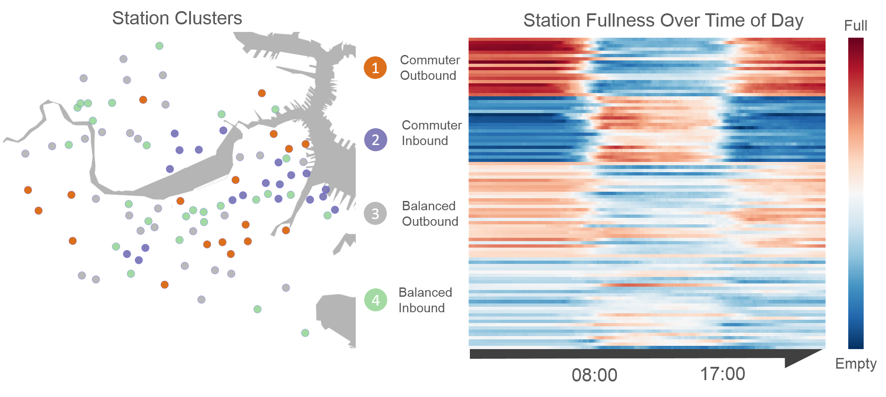

CS109 Data Science

Predicting Hubway Stations Status by Lauren Alexander, Gabriel Goulet-Langlois, Joshua Wolff
Learning from data in order to gain useful predictions and insights. This course introduces methods for five key facets of an investigation: data wrangling, cleaning, and sampling to get a suitable data set; data management to be able to access big data quickly and reliably; exploratory data analysis to generate hypotheses and intuition; prediction based on statistical methods such as regression and classification; and communication of results through visualization, stories, and interpretable summaries.
We will be using Python for all programming assignments and projects. All lectures will be posted here and should be available 24 hours after meeting time.
The course is also listed as AC209, STAT121, and E-109.
Lectures and Sections
- Lectures are 2:30-4pm on Tuesdays & Thursdays in Science Center B
- First week collective section Friday 9/4/ 10am-12pm in MD G115
- Section times on schedule page
Instructors
- Joe Blitzstein, Statistics, Office hours: Wednesdays 4-5pm in SC 714
- Hanspeter Pfister, Computer Science
- Verena Kaynig-Fittkau, Computer Science, Office hours: Tuesdays 4:15-5pm in NW B164
Staff
- Rahul Dave, Head TF
- And many others
Please be aware, that we will not publicly release the homework assignments from this year. If you want to follow the course online without registering, you can use the assignments from 2013 and 2014, available at the links below.
Material from CS 109 taught in Fall 2014
- Please find all material linked on this webpage.